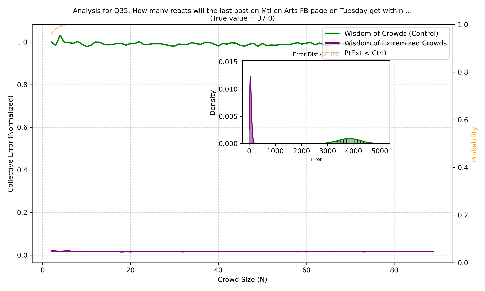
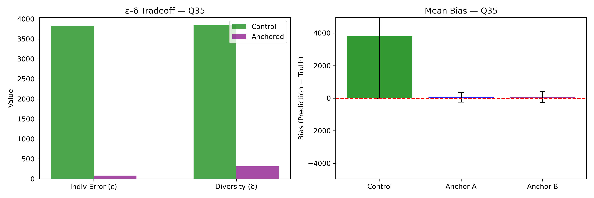
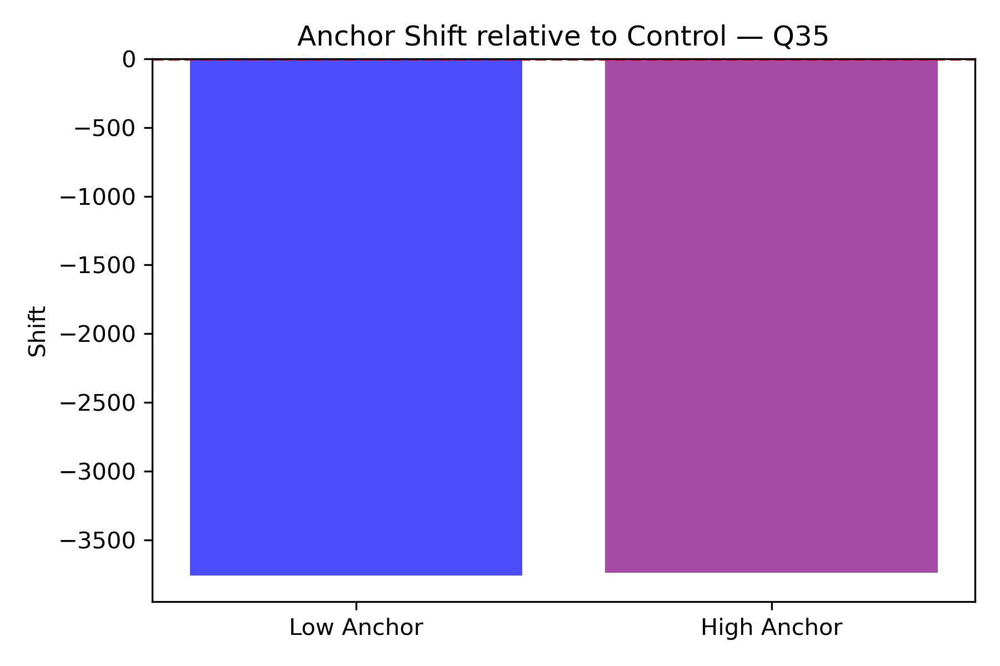
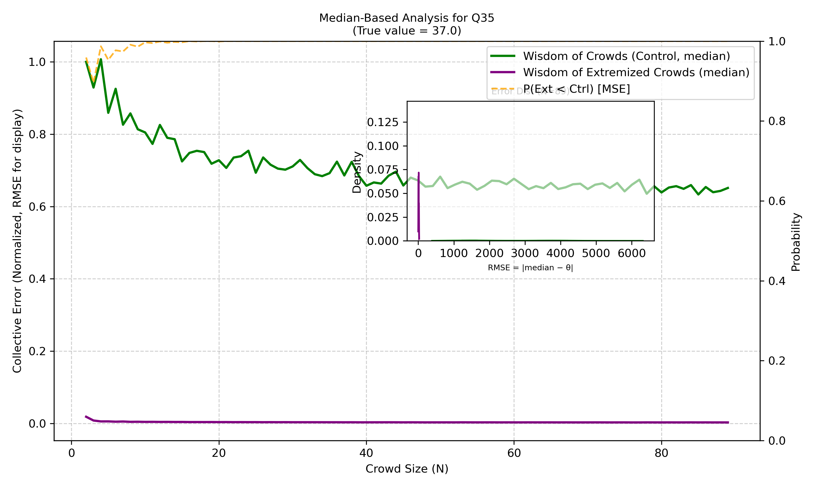
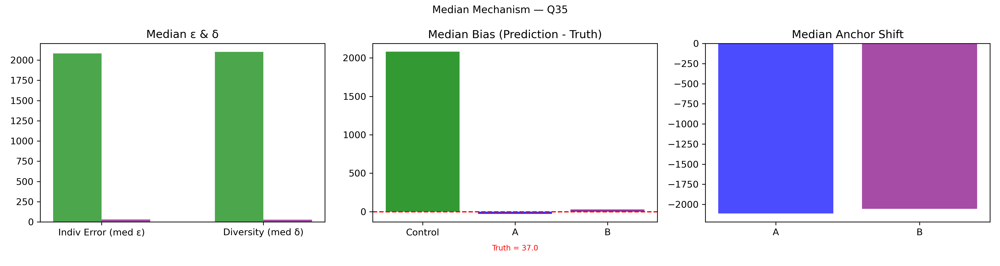

Q35
How many reacts will the last post on Mtl en Arts FB page on Tuesday get within 24 hrs?
Question details
| Truth (θ) | 37.0 |
| Low anchor | 4.0 |
| High anchor | 73.0 |
Verdict
Extremization improved?
YES
Mechanism
Calibration
Best condition
Low
E_ctrl = 1.4533e+07 → E_ext = 3.8394e+03
Plots

Mean-based Barrera curve (Control vs Extremized)

Mechanism: main panel

Mechanism: anchor shift

Median-based robustness (MSE-style)

Median mechanism (if available)
Full SUPER summary
Show / hide full text
================================================================================
QUESTION Q35: 05_Export_0713_stats_22bJsXhZzK.csv
How many reacts will the last post on Mtl en Arts FB page on Tuesday get within 24 hrs?
Truth = 37.0
N_ctrl = 89 N_ext = 108
================================================================================
[1] MEAN-BASED COLLECTIVE ERROR (MAE)
Ec = 3826.0833 ± 411.9549, CI = [3034.7677, 4641.9213]
Ex = 60.8090 ± 33.7325, CI = [9.8851, 138.1722]
Percent Change = -98.41%
Bootstrap P(Ext < Ctrl) = 1.0000
t-test(E): t = 288.069, p = 0.000000 (SIGNIFICANT (p < .05))
[2] MEAN INDIVIDUAL ERROR (ε) — MAE-based
ε_ctrl = 3817.8764, ε_ext = 83.9815
Percent Change = -97.80%
Welch t-test p = 2.38e-14
[3] MEAN DIVERSITY (δ) — Std-based
δ_ctrl = 3845.8772, δ_ext = 314.5277
Percent Change = -91.82%
Levene p = 1.813e-31
[4] ANCHOR DIAGNOSTICS
Anchors: A = 4.0, B = 73.0
Effective: A = True, B = True
[5] EQUATION 6 CHECK (B-L Feasibility)
anchor_weight_low = 0.9780, anchor_weight_high = 0.9903
Δ = 7747.2628
Criterion_L = None, Criterion_H = None
Eq6 Prediction Correct = True
[6] MEAN δ–ε–E SCENARIO (MAE-based)
Scenario: δ:down, ε:down, E:down
Mechanism: {'pattern': 'δ:down, ε:down, E:down', 'mechanism': 'Calibration', 'explanation': 'Anchoring reduced both individual error and diversity.'}
================================================================================
INTERPRETATION — MEAN AGGREGATION
================================================================================
Mean-based collective error changed by -98.41% relative to the true value 37.0. Scenario = δ:down, ε:down, E:down. Eq6 Feasibility = True.
================================================================================
[7] MEDIAN AGGREGATION SUMMARY
Median E: 2083.0000 → 11.0000 (-99.47%)
Median ε: 2083.0000 → 30.5000 (-98.54%)
Median δ: 2101.0000 → 28.0000 (-98.67%)
Median Scenario: δ:down, ε:down, E:down
Mean vs Median: Median agrees with mean.
Interpretation: Median indicates anchors moved predictions closer to the true value (37.0).
Median t-test p-value = 0.000000 (SIGNIFICANT (p < .05))
[8] MEAN vs MEDIAN — NUMERICAL COMPARISON
Mean Scenario: δ:down, ε:down, E:down
Median Scenario: δ:down, ε:down, E:down
Conclusion: Anchoring effects are consistent across distribution center and tails relative to truth = 37.0.
================================================================================